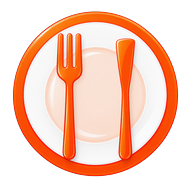

Download RestoranKu
Pilih perangkatmu untuk mulai install
🤖 Install di Android
Download file APK dan install langsung di HP-mu. Tidak perlu Play Store.
Download APK⚠️ Saat instalasi, mungkin muncul peringatan "sumber tidak dikenal" — pilih "Install tetap". Ini normal karena aplikasi belum dari Play Store.
📋 Cara Install Manual
Beberapa HP atau tablet Android tidak mengizinkan install aplikasi di luar Play Store secara default. Kalau file APK tidak otomatis terbuka atau muncul blokir, ikuti langkah berikut:
- Tap tombol Download APK di atas dan tunggu file selesai diunduh
- Buka notifikasi download, atau cari file RestoranKu.apk di aplikasi File Manager / Berkas (biasanya folder Download)
- Tap file APK tersebut untuk mulai instalasi
- Jika muncul peringatan "Untuk keamanan HP-mu, jenis file ini biasanya diblokir" atau "Instal aplikasi tidak dikenal", tap "Setelan" pada dialog tersebut
- Aktifkan opsi "Izinkan dari sumber ini", lalu tekan tombol kembali
- Tap file APK sekali lagi, lalu pilih "Install" / "Install tetap"
- Setelah selesai, tap "Buka" untuk langsung menjalankan aplikasi
💡 Nama menu izin bisa sedikit berbeda tergantung merk HP (Samsung, Xiaomi, Oppo, dll), tapi intinya sama: cari opsi "Sumber tidak dikenal" atau "Izinkan dari sumber ini" lalu aktifkan untuk aplikasi File Manager / Browser yang kamu pakai.
🛡️ Masih Tidak Bisa Install?
Kalau sudah mengizinkan "sumber tidak dikenal" tapi instalasi tetap gagal atau diblokir otomatis, biasanya Google Play Protect yang memblokirnya. Nonaktifkan sementara pemindaiannya dengan langkah berikut:
- Buka aplikasi Google Play Store, lalu tap ikon foto profil kamu di pojok kanan atas

- Pada menu yang muncul, pilih "Play Protect"
- Di halaman Play Protect, tap ikon ⚙️ (Setelan) di pojok kanan atas

- Matikan toggle "Pindai aplikasi dengan Play Protect"

- Kembali dan install ulang RestoranKu.apk seperti langkah sebelumnya

ℹ️ Pemindaian akan otomatis aktif lagi keesokan harinya, jadi ini aman dan tidak mematikan proteksi HP-mu secara permanen. Setelah RestoranKu terinstall, kamu boleh mengaktifkannya kembali kapan saja lewat menu yang sama.
🍎 Install di iPhone / iPad
Aplikasi iOS diinstall langsung lewat Safari, tanpa App Store — hanya butuh beberapa detik.
- Buka halaman ini di Safari (bukan Chrome)

- Tap ikon Bagikan (kotak dengan panah ke atas) di bagian bawah layar, lalu scroll dan pilih "Tambahkan ke Layar Utama"

- Tap "Tambah" di pojok kanan atas

Ikon RestoranKu akan muncul di Layar Utama seperti aplikasi biasa, terbuka tanpa address bar Safari.

💻 Install di Windows / Mac
Install sebagai aplikasi desktop langsung dari browser Chrome atau Edge.
- Buka asistenrestoran.com di Chrome atau Edge
- Klik ikon install (⊕) di pojok kanan address bar
- Klik "Install" pada dialog yang muncul